So, you wanna build a website?
Enter your NetID, and we'll customize this tutorial for you!
Table of Contents
Step 1. Connect to the Mason server
This is probably the hardest part of tonight. If you can get past this, the rest of this will be a breeze!
When you visit a website, your browser downloads a special file called an "HTML" file and displays it. In this class, we will be creating these files and transfering them to the Mason server. Once you do this, you will be able to visit http://mason.gmu.edu/~{{netid}}/ and see your webpage!
So we need to start by learning how to transfer files to the Mason server.
Step 1a. Microsoft Windows
If you're using Microsoft Windows, you will need to download a program to transfer files to the Mason server. We suggest that you download and install Cyberduck. Then follow the instructions in Step 1b.
Step 1b. Apple Macintosh OS X
If you're using Apple Macintosh OS X, you will need to download a
program to transfer files to the Mason server. We suggest that you
download and install Cyberduck.
(NOTE: OS X already comes with the scp and
sftp terminal programs built-in which can perform the
exact same functionality as Cyberduck, without the easy-to-use
graphical interface.)
Once you've installed Cyberduck, open Cyberduck.

Click Open Connection, and make sure SFTP (SSH File Transfer Protocol) is selected from the dropdown. In the box for Server, enter mason.gmu.edu and make sure the Port is 22. In the box labeled Username, enter '{{netid}}' without the single quotes. Enter your GMU Password in the box labeled Password. If you've forgotten your password, you can reset your Patriot Pass password. Once you've verified that your information is correct, click Connect.

Step 1c. Linux
If you're using Linux, you probably have everything you need already! Like OS X, the terminal programs scp and sftp are built-in and can perform the exact same functionality without an easy-to-use graphical interface. Unlike OS X however, the graphical interface is built in to most modern Linux distributions.
Open Files, and click File > Connect to Server.
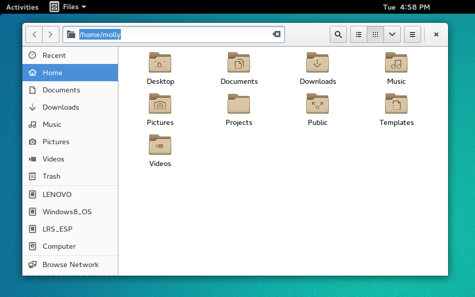
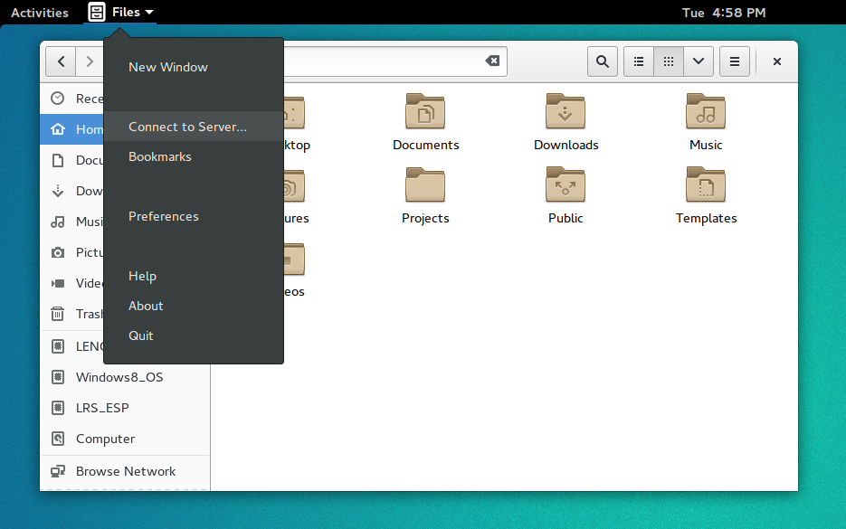
Your dialog may only have a single box for the Server Address. If so, type sftp://{{netid}}@mason.gmu.edu/home/{{netid}} in the Server Address box and click Connect. It will ask you for your GMU password. If you've forgotten your password, you can reset your Patriot Pass password.
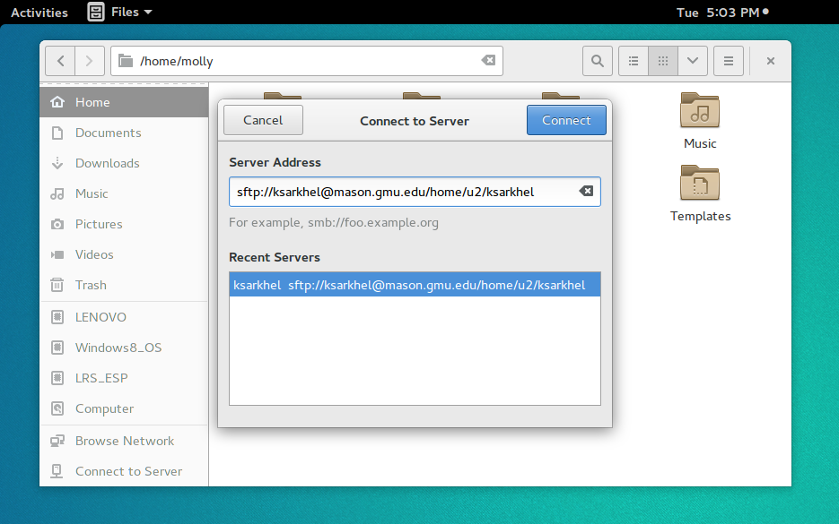
If succesful, it should look like the following. If this is your first time logging into the Mason cluster, you might not have any files there. If there is an error that the folder does not exist, skip ahead to solve your issue.
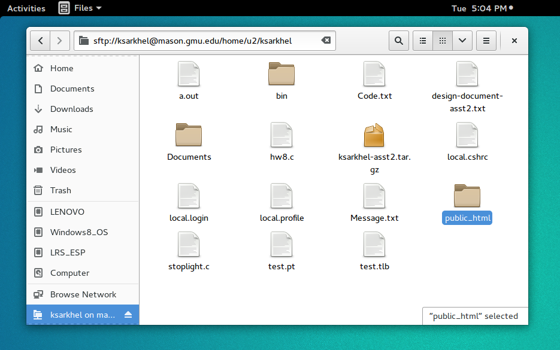
Depending on your Linux distribution, your dialog box may look slightly different, but generally make sure it matches these settings. In the Server box, type mason.gmu.edu. Make sure the Type is SSH or SFTP, and the Port is 22. If there is a Path or Folder option, leave it blank. Set the User name to '{{netid}}' and your Password to your GMU password. If you've forgotten your password, you can reset your Patriot Pass password. Remember that this is the same username and password that you use for PatriotWeb.
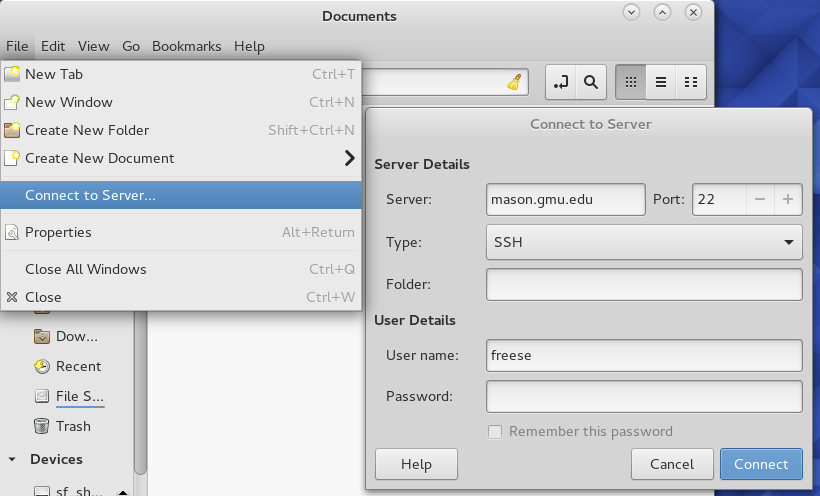
Once you've connected, you may see a bunch of folders (like in the following image), it is because your SFTP client could not figure out where your home directory is by default, and it placed you at the root directory of the entire Mason cluster.
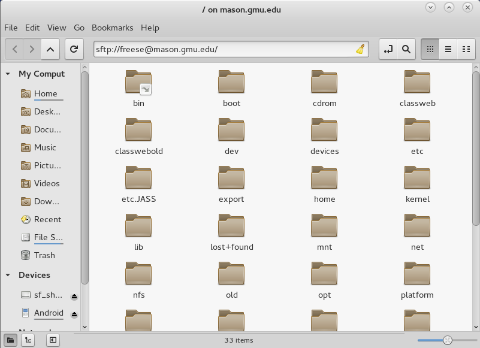
If this is the case, you may need to manually find your home directory. In the address bar, try setting the path to /home/u1/{{netid}}/ (if your dialog only has Server Address, input sftp://{{netid}}@mason.gmu.edu/home/u1/{{netid}}/).
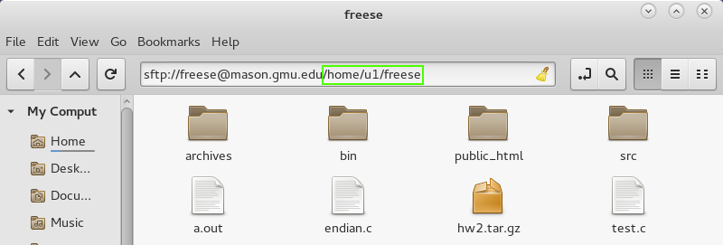
If this doesn't work, try using /home/u2/{{netid}}/. Keep trying from u1 all the way up through u5. This is because Mason uses a strange partition for user home directories&emdash;on a normal system, it should just be /home/{{netid}}/.) Once you don't get an error, you should see the files in your home directory&emdash;if this is your first time logging into the Mason cluster, keep in mind you that probably don't have any files yet.
Step 1.5. Setting up your home directory
Now that you're logged into your account on the Mason cluster, we need to ensure that your home directory is set up properly to host a web page.
In order to serve HTML files to your public webpage, Mason
relies on the existence of a directory named
public_html inside
your home directory. To create this directory, right click in the
Cyberduck window and select New Folder, then type
public_html.
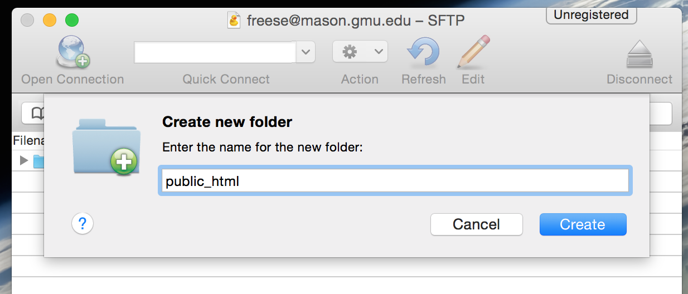
Within this directory you will place all the HTML files that you want people to be able to see, including the ones we make during this class. Let's go ahead and make a test homepage.
Open a basic text editor (notepad
on Windows, TextEdit on Mac, or gedit on Linux)
and create a new file.
In this file, type whatever you want - keep it short for now, such
as your name, or a sentence. Then save the file with the name
index.html. This is a magic file name that the web
server on Mason expects to see when your home page is loaded.
index in the Save As: field.Failure to follow those steps may result in a file with a name like
index.html.txt, which will not be loaded correctly.
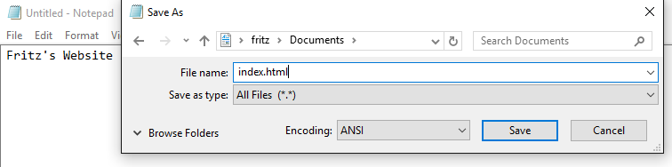
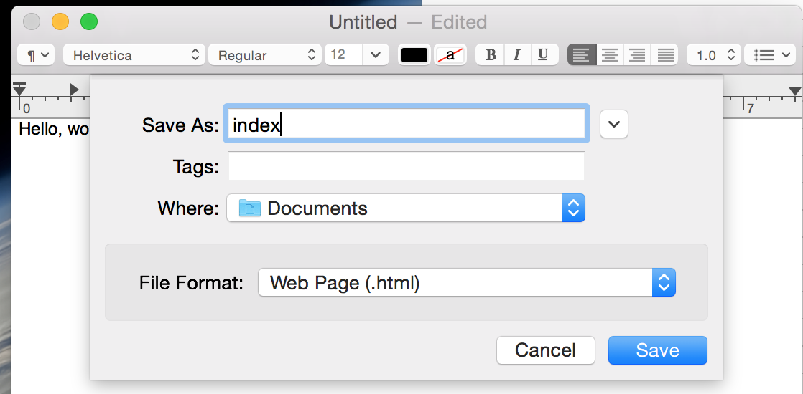
Now we're going to upload the file you made to your home
directory on Mason, inside the public_html directory
we made earlier. To do that, simply drag the file from wherever you
saved it on your local computer to inside your SFTP window,
ensuring it lands inside the public_html folder.
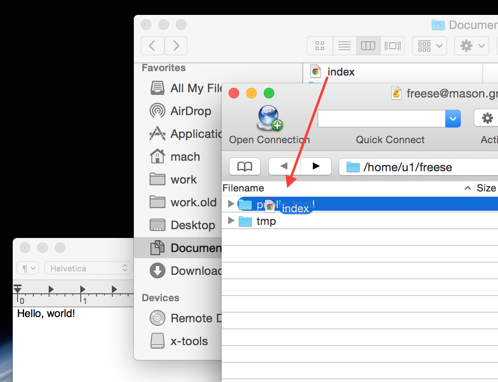
Now let's open a browser and visit your new website. The URL is mason.gmu.edu/~{{netid}}
If you are setting up web access for the first time, you may get an error page 403 Forbidden. If this is the case, it is because the public_html directory you created had its permissions set by default to disallow others from viewing the files inside. To fix this in Cyberduck, right-click on the public_html folder and click Info. Then click the Permissions tab at the top of the window. Your permissions should be set to Read, Write and Execute for Owner, and Execute for Group and Others. The Execute permission flag enables other people to list the files in your public_html directory. You do NOT want Write permissions for Group or Other; otherwise, anyone would be able to modify your files! To verify you have the correct permissions, check that the Unix Permissions box reads 711 or 755. Once you have the correct permissions, refresh the page in your internet browser, and the error should go away.
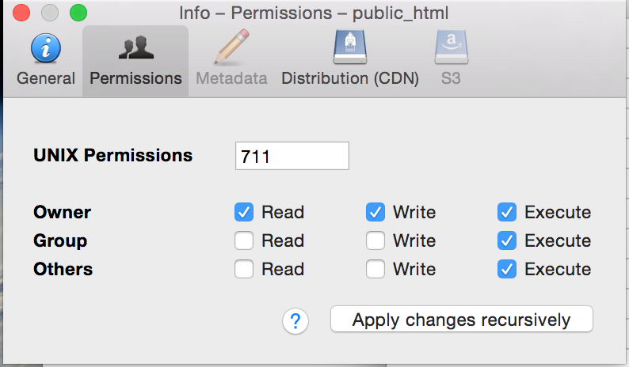
If everything is correct, you should see the text that you typed into your index.html file in your browser.
Congratulations! You are now ready to make your own website on the Mason cluster!
Step 2. Basic HTML
Now we're ready to learn some basic HTML!
Basic Structure of an HTML File
Before we learn about writing HTML, we need to learn the structure of an HTML document.
A typical HTML document has the following structure
<!doctype html>
<html>
<head>
<title>Your title goes here</title>
</head>
<body>
<!-- Put your content here -->
</body>
</html>
It is composed of the doctype (the document type), the <head> (which contains the <title> of your page), and the <body> (which contains your content).
In order to change the title of the page, you will change the text reading Your title goes here. For the rest of this tutorial, we will be changing the text in between the <body> tags. What are HTML tags you say? We'll see in the next section!
HTML Tags
HTML, or Hypertext Markup Llanguage, is composed of text and tags.
Paragraphs
Breaking up your Content using Header Tags
Linking to Other Files
Lists

Lists are a useful way to organize information. For example, you could put a list of classes you've taken or a shopping list on your webpage. You can either have an unordered list (just bullet points) or an ordered list (where each item is enumerated 1, 2, 3,… and so on). We'll start with unordered lists.
Start by adding the following code to your HTML file.
<ul> <li>Milk</li> <li>Bred</li> <li>Egs</li> <li>A Dog</li> </ul>
The text between the <li> and </li> tags are called the list item tags. The <ul> starts an unordered list in which you can put list item tags. When you reload your browser, you should see the following:
- Milk
- Bred
- Egs
- A Dog
Try adding another list item that says Hello, List!.
Once you've done that, change the <ul> and </ul> to <ol> and </ol< respectively. Once you've done that it should look like this when you reload the browser.
- Milk
- Bred
- Egs
- A Dog
- Hello, List!
If your browser doesn't look like this, make sure your code looks like the following:
<ul> <li>Milk</li> <li>Bred</li> <li>Egs</li> <li>A Dog</li> <li>Hello, List!</li> </ul>